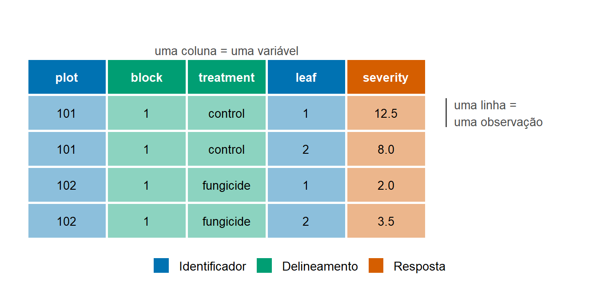
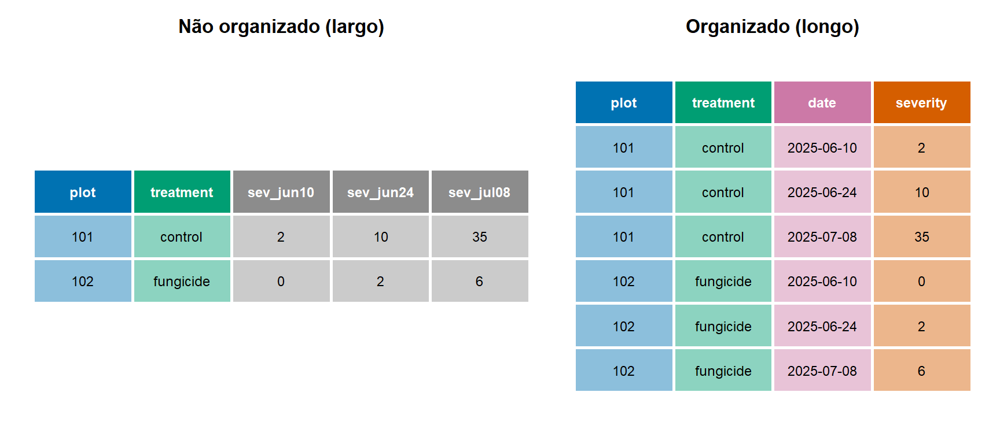

3 Como os dados científicos devem ser organizados?
3.1 Objetivos de aprendizagem
Importante
Ao concluir este capítulo, o leitor deverá ser capaz de:
- explicar por que a organização dos dados é essencial para a pesquisa reprodutível;
- distinguir dados brutos de dados processados;
- construir conjuntos de dados organizados (tidy) adequados para a análise;
- identificar observações, variáveis e identificadores;
- organizar metadados e informações de apoio;
- reconhecer erros comuns de digitação de dados;
- aplicar boas práticas de documentação e armazenamento de dados de pesquisa.
3.2 Por que a organização dos dados importa
Um estudo bem delineado produz observações, mas as observações só se tornam evidência depois de registradas, organizadas, verificadas e documentadas. Entre o campo, a casa de vegetação ou o laboratório e a análise final existe uma etapa frequentemente tratada como burocrática: a construção do conjunto de dados. Na prática, essa etapa determina se a análise será simples ou penosa, transparente ou opaca, correta ou silenciosamente errada.
Dados mal organizados causam problemas que nenhum método estatístico consegue corrigir. Um valor de severidade digitado na linha errada atribui doença ao tratamento errado. Um valor perdido registrado como zero reduz a média de um tratamento. Uma planilha em que os tratamentos são identificados apenas pela cor das células não pode ser lida por programas de análise. Um arquivo chamado dados_final_v2_NOVO_corrigido.xlsx não indica se contém as observações brutas ou uma versão da qual se removeram valores discrepantes. Cada um desses problemas é comum, e cada um pode mudar as conclusões de um estudo sem que ninguém perceba.
A organização dos dados também determina se a pesquisa pode ser reproduzida. Um colaborador, um revisor ou o próprio pesquisador dois anos depois deve conseguir abrir o conjunto de dados e entender o que cada linha representa, o que cada coluna contém, em que unidades os valores estão expressos e como o conjunto foi obtido a partir dos registros originais. Quando essa informação existe apenas na memória de quem coletou os dados, os resultados não podem ser verificados, reutilizados ou combinados com outros estudos.
Por fim, uma boa organização economiza tempo. Os pesquisadores frequentemente gastam mais tempo preparando os dados para a análise do que analisando-os. Boa parte desse esforço decorre de decisões tomadas na digitação: nomes inconsistentes, células mescladas, várias tabelas na mesma planilha ou informação codificada em formatação. Organizar os dados com cuidado desde o início é muito mais barato do que consertá-los depois.
Importante
Dados bem organizados são a base da pesquisa científica reprodutível. A estatística não compensa dados mal organizados.
3.3 Das observações ao conjunto de dados
3.3.1 O que é um conjunto de dados?
Um conjunto de dados é uma coleção estruturada de observações registradas segundo regras consistentes. Na maioria dos estudos em Fitopatologia, ele tem a forma de uma tabela retangular: as linhas representam o que foi observado, e as colunas representam as características registradas para cada observação. Essa forma retangular não é mera convenção. É a estrutura esperada pelos programas estatísticos, e ela obriga o pesquisador a declarar explicitamente o que foi observado e o que foi medido.
Um conjunto de dados não é o mesmo que um arquivo de planilha. Um único arquivo pode conter vários conjuntos de dados (por exemplo, uma tabela com informações das parcelas e outra com as avaliações de doença), e um único conjunto de dados pode estar guardado em vários arquivos (por exemplo, avaliações de anos diferentes). O que importa é que cada tabela tenha uma estrutura clara e que as relações entre as tabelas estejam documentadas.
3.3.2 Observações
Uma observação é o registro único das características de uma unidade em um momento. Em um ensaio de campo, uma observação pode ser a severidade da doença em uma parcela em uma data de avaliação. Em um ensaio de laboratório, pode ser o diâmetro da colônia em uma placa de Petri após determinado período de incubação. Em um levantamento, pode ser a informação registrada para uma lavoura visitada.
Definir a observação é a decisão mais importante na organização dos dados, e ela decorre diretamente do delineamento do estudo discutido no Capítulo 2. Se a severidade foi avaliada em dez folhas por parcela, o pesquisador precisa decidir se cada linha representará uma folha ou uma parcela. As duas escolhas podem ser válidas, mas levam a conjuntos de dados diferentes e devem ser declaradas claramente. Manter o nível mais detalhado efetivamente registrado (aqui, a folha) costuma ser preferível, porque resumos em níveis superiores (médias por parcela) sempre podem ser calculados depois, ao passo que a informação detalhada não pode ser recuperada a partir dos resumos.
3.3.3 Variáveis
Uma variável é uma característica registrada para todas as observações e que pode variar entre elas. Tratamento, bloco, cultivar, data de avaliação, incidência, severidade, temperatura e produtividade são variáveis. Cada variável é registrada em uma coluna, e todos os valores dessa coluna devem se referir à mesma característica, medida da mesma forma e expressa nas mesmas unidades.
Algumas variáveis descrevem o delineamento do estudo (tratamento, bloco, repetição, execução), outras descrevem o contexto (local, data, cultivar, avaliador) e outras são as respostas que respondem à questão biológica (severidade, incidência, número de lesões, produtividade). Todas pertencem ao conjunto de dados. A informação sobre o delineamento é particularmente fácil de omitir, porque parece óbvia para quem coletou os dados, mas é indispensável para a análise.
3.3.4 Identificadores
Um identificador é uma variável, ou combinação de variáveis, que distingue de forma única cada unidade. Números de parcela, etiquetas de plantas, códigos de isolados, códigos de barras de amostras e identificadores de lavouras são exemplos típicos. Os identificadores ligam as observações às unidades físicas de onde foram obtidas, conectam tabelas diferentes (por exemplo, informações das parcelas e avaliações de doença) e permitem rastrear qualquer valor até sua origem.
Na terminologia de bancos de dados, uma variável ou combinação de variáveis que identifica de forma única cada linha de uma tabela é chamada chave primária. Em uma tabela de características das parcelas, o número da parcela pode bastar. Em uma tabela de avaliações repetidas, é necessária a combinação de parcela e data, porque cada parcela aparece uma vez para cada avaliação. Se duas linhas têm a mesma chave, ou os dados contêm duplicatas ou a chave está incompleta.
3.3.5 Unidades de observação
A unidade de observação é a entidade descrita por uma linha da tabela. Ela está relacionada, mas nem sempre é igual, à unidade experimental e à unidade amostral apresentadas no Capítulo 2. Em um ensaio de campo em que os tratamentos são aplicados às parcelas e a severidade é avaliada em folhas individuais, a parcela é a unidade experimental, a folha é a unidade amostral, e o conjunto de dados poderia ser organizado tendo a folha ou a parcela como unidade de observação.
O importante é que a unidade de observação seja explícita e constante dentro de uma tabela. Uma tabela em que algumas linhas representam folhas individuais e outras representam médias de parcelas não pode ser analisada corretamente. Quando há informação em mais de um nível, geralmente é melhor guardá-la em tabelas separadas, uma para cada nível, ligadas por identificadores.
plot e leaf identifica cada linha de forma única.
| plot | block | treatment | leaf | severity |
|---|---|---|---|---|
| 101 | 1 | control | 1 | 12.5 |
| 101 | 1 | control | 2 | 8.0 |
| 102 | 1 | fungicide | 1 | 2.0 |
| 102 | 1 | fungicide | 2 | 3.5 |
Nota
Nos exemplos deste livro, nomes de variáveis e códigos de categorias são mantidos em inglês (plot, block, treatment, severity), como é comum em códigos de análise e em dados compartilhados internacionalmente. O mais importante é escolher uma convenção e aplicá-la de forma consistente.
3.4 Princípios de dados organizados (tidy data)
A estrutura descrita acima foi formalizada como dados organizados (tidy data) (Wickham 2014). Um conjunto de dados é organizado quando sua estrutura corresponde ao seu significado: a forma da tabela reflete diretamente o que foi observado e o que foi medido. Dados organizados seguem três princípios.
3.4.1 Uma linha por observação
Cada linha contém todos os valores registrados para uma única observação e nada mais. Se a severidade foi avaliada em quatro datas em cada parcela, um conjunto organizado contém quatro linhas por parcela, uma para cada avaliação. Uma linha nunca deve conter observações de mais de uma unidade ou de mais de um momento.
3.4.2 Uma coluna por variável
Cada coluna contém uma única variável. A informação que varia entre observações, como a data de avaliação, pertence à sua própria coluna, e não aos nomes das colunas. Uma tabela com colunas chamadas sev_jun10, sev_jun24 e sev_jul08 guarda a variável data nos cabeçalhos. A versão organizada tem uma coluna chamada date e uma coluna chamada severity.
O princípio também proíbe guardar duas variáveis em uma coluna. Uma coluna com valores como R1-control combina repetição e tratamento, e uma coluna com 25 C/12 h combina temperatura e duração do molhamento. Cada uma deve ser dividida em colunas separadas.
3.4.3 Uma tabela por unidade de observação
Cada tipo de unidade de observação fica em sua própria tabela. As características das parcelas (bloco, tratamento, cultivar, data de semeadura) são registradas uma vez por parcela, em uma tabela de parcelas. As avaliações repetidas ficam em uma tabela de avaliações, com uma linha por parcela e data. Registros meteorológicos, com uma linha por hora ou por dia, formam uma terceira tabela. Essas tabelas são ligadas por identificadores compartilhados, como o número da parcela ou a data, em vez de repetir toda a informação em uma única tabela grande.
3.4.4 Por que dados organizados simplificam as análises
Dados organizados não são questão de estilo. A maioria dos programas estatísticos e gráficos, incluindo as ferramentas do R usadas neste livro, espera que cada variável seja uma coluna e cada observação uma linha. Quando os dados estão organizados, o mesmo pequeno conjunto de operações (filtrar linhas, selecionar colunas, agrupar, resumir e unir tabelas) pode ser aplicado a praticamente qualquer conjunto de dados. Quando não estão, toda análise começa com uma reorganização diferente e improvisada, demorada e sujeita a erros.
A estrutura organizada também torna visível o delineamento do estudo. Olhando uma tabela organizada, o leitor vê os tratamentos, os blocos, as unidades e as medidas repetidas, e pode verificar se o conjunto de dados é coerente com o estudo descrito.

| plot | treatment | sev_jun10 | sev_jun24 | sev_jul08 |
|---|---|---|---|---|
| 101 | control | 2 | 10 | 35 |
| 102 | fungicide | 0 | 2 | 6 |
| plot | treatment | date | severity |
|---|---|---|---|
| 101 | control | 2025-06-10 | 2 |
| 101 | control | 2025-06-24 | 10 |
| 101 | control | 2025-07-08 | 35 |
| 102 | fungicide | 2025-06-10 | 0 |
| 102 | fungicide | 2025-06-24 | 2 |
| 102 | fungicide | 2025-07-08 | 6 |
Nota
Tabelas largas costumam ser práticas para anotar dados no campo, e não há nada de errado em usá-las na ficha de campo. O que importa é que o conjunto de dados usado na análise esteja organizado e que a conversão de um formato para o outro seja documentada e reprodutível.
3.5 Estruturas de dados comuns em Fitopatologia
Embora os estudos em Fitopatologia variem muito, a maioria dos conjuntos de dados se enquadra em algumas estruturas recorrentes. Reconhecê-las ajuda a decidir como organizar os dados antes da coleta.
3.5.1 Experimentos de avaliação de doença
Em muitos experimentos, a doença é avaliada em várias unidades amostrais dentro de cada unidade experimental: folhas em uma planta, plantas em um vaso ou lesões em uma folha. O conjunto de dados deve registrar a unidade experimental, a unidade amostral e a resposta.
| pot | isolate | plant | leaf | lesions |
|---|---|---|---|---|
| 1 | A12 | 1 | 1 | 4 |
| 1 | A12 | 1 | 2 | 7 |
| 1 | A12 | 2 | 1 | 3 |
3.5.2 Ensaios de campo
Ensaios de campo normalmente incluem tratamentos dispostos em blocos, muitas vezes com várias variáveis resposta medidas por parcela. Cada linha é uma parcela, e cada resposta é uma coluna.
| plot | block | treatment | incidence | severity | yield_kg_ha |
|---|---|---|---|---|---|
| 101 | 1 | control | 85 | 22.4 | 2850 |
| 102 | 1 | fung_A | 30 | 4.1 | 3620 |
3.5.3 Experimentos em casa de vegetação
Experimentos em casa de vegetação e câmara de crescimento acrescentam fontes de estrutura que precisam ser registradas: bancada, câmara, bandeja, posição e execução do experimento. Essas variáveis podem ser usadas depois como blocos ou efeitos aleatórios, e omiti-las impossibilita considerá-las.
| run | chamber | bench | pot | inoculum | severity |
|---|---|---|---|---|---|
| 1 | C1 | 2 | 14 | 10^5 | 18 |
| 1 | C1 | 2 | 15 | 10^6 | 31 |
3.5.4 Dados de progresso da doença
Quando a doença é avaliada repetidamente nas mesmas unidades, cada avaliação se torna uma linha separada, identificada pela unidade e pela data ou pelo tempo desde um evento de referência (semeadura, inoculação ou primeiros sintomas). Tanto a data do calendário quanto o tempo decorrido costumam ser úteis.
| plot | treatment | date | days_after_planting | severity |
|---|---|---|---|---|
| 101 | control | 2025-06-10 | 35 | 2 |
| 101 | control | 2025-06-24 | 49 | 10 |
3.5.5 Dados meteorológicos
Registros meteorológicos geralmente são coletados em intervalos regulares por estações automáticas. Cada linha é um instante, e cada coluna é uma variável meteorológica. As tabelas de clima normalmente se ligam às tabelas de doença pela data e pelo local.
| station | datetime | temp_c | rh_pct | rain_mm | leaf_wet_min |
|---|---|---|---|---|---|
| ST01 | 2025-06-10 06:00 | 14.2 | 96 | 0.0 | 60 |
| ST01 | 2025-06-10 07:00 | 15.8 | 91 | 0.2 | 45 |
3.5.6 Dados moleculares
Estudos moleculares frequentemente produzem muitas variáveis por amostra, como os níveis de expressão de muitos genes. Normalmente são necessárias duas tabelas: uma tabela de amostras, que descreve cada amostra biológica (tratamento, tempo, repetição), e uma tabela de medidas. Quando o número de variáveis é grande, a tabela de medidas pode ser guardada em formato longo, com uma linha por amostra e gene, ou no formato de matriz exigido por programas especializados, mas a informação das amostras deve sempre ficar em uma tabela separada e organizada.
hpi = horas após a inoculação.
| sample | treatment | hpi | bio_rep | gene | ct |
|---|---|---|---|---|---|
| S01 | mock | 24 | 1 | PR1 | 27.3 |
| S01 | mock | 24 | 1 | EF1a | 18.9 |
| S02 | inoculated | 24 | 1 | PR1 | 22.1 |
3.5.7 Dados de levantamento
Levantamentos registram informações sobre lavouras, propriedades ou regiões, muitas vezes combinando localização, práticas de manejo e observações de doença. Coordenadas, datas e o procedimento de amostragem devem ser registrados para que os resultados possam ser mapeados, relacionados ao clima ou comparados entre anos.
| field | lat | lon | date | cultivar | tillage | incidence |
|---|---|---|---|---|---|---|
| F001 | -20.7542 | -42.8821 | 2025-03-12 | BRS 123 | no-till | 15 |
| F002 | -20.8123 | -42.9010 | 2025-03-12 | BRS 456 | conv | 40 |
3.6 Tipos de variáveis
O tipo de uma variável determina como ela deve ser registrada, resumida, representada graficamente e analisada. Identificar os tipos de variáveis na organização dos dados prepara o terreno para as escolhas feitas nos capítulos seguintes.
3.6.1 Variáveis contínuas
Variáveis contínuas podem assumir qualquer valor dentro de um intervalo, limitadas apenas pela precisão da medida: comprimento da lesão, diâmetro da colônia, temperatura, produtividade ou taxa fotossintética. Devem ser registradas como números, com tanta precisão quanto a medida permitir, e em uma única unidade para toda a coluna.
A severidade expressa em porcentagem é frequentemente tratada como contínua, mas é limitada entre 0 e 100. Quando a severidade é estimada visualmente, os valores podem se concentrar em certos números (5, 10, 25), refletindo o método de avaliação e não a biologia. Essas características importam mais tarde, na escolha de gráficos e modelos.
3.6.2 Contagens
Contagens são números inteiros não negativos: lesões por folha, pústulas por cm², esporos por armadilha ou plantas infectadas por parcela. Devem ser registradas como inteiros. Quando uma contagem é convertida em proporção (plantas infectadas divididas por plantas avaliadas), tanto o numerador quanto o denominador devem ser mantidos, porque o denominador carrega informação sobre a precisão.
3.6.3 Categorias
Variáveis categóricas classificam as observações em grupos: tratamento, cultivar, isolado, bloco ou tipo de solo. As categorias devem ser registradas com rótulos consistentes. Algumas variáveis categóricas têm uma ordem natural, como as classes de severidade em uma escala ordinal (0 a 5) ou os níveis de resistência (resistente, moderadamente resistente, suscetível). Categorias ordenadas são registradas como categorias, e não como medidas contínuas, mesmo quando codificadas com números.
Números usados como rótulos merecem atenção especial. Um bloco codificado como 1, 2, 3, 4 ou um tratamento codificado de 1 a 6 é categórico, embora pareça numérico. Os programas tratarão essas colunas como números se não forem instruídos do contrário, o que pode levar a análises sem sentido, como calcular a média dos números dos blocos.
3.6.4 Variáveis binárias
Variáveis binárias têm apenas dois valores possíveis: infectado ou não infectado, presente ou ausente, germinado ou não germinado. O melhor é registrá-las de forma consistente como 0 e 1 ou com dois rótulos claramente definidos (por exemplo, yes e no). Misturar códigos como S, sim, 1 e + na mesma coluna gera erros.
3.6.5 Datas e horários
Datas e horários são essenciais na Fitopatologia, porque a doença se desenvolve ao longo do tempo e depende do clima. Devem ser registrados em um formato sem ambiguidade. O padrão internacional ISO 8601 (AAAA-MM-DD, por exemplo 2025-06-10) evita a confusão entre as convenções dia-mês e mês-dia e ordena corretamente como texto. Os horários devem incluir o fuso horário ou ser claramente documentados como hora local.
Programas de planilha frequentemente convertem datas, sem aviso, em números internos ou as reinterpretam de acordo com as configurações regionais. Conferir as datas após a importação é, portanto, uma etapa importante da validação.
3.6.6 Cadeias de caracteres
Texto livre, como anotações de campo, comentários do avaliador ou descrições de sintomas, é registrado como cadeia de caracteres. O texto é um contexto valioso, mas difícil de analisar. A informação que será usada na análise deve ser registrada em variáveis próprias, codificadas, enquanto o texto livre deve ficar em uma coluna separada de notes ou comments, e não misturado com valores numéricos.
3.6.7 Valores perdidos
Valores perdidos indicam que uma observação foi planejada, mas não obtida: uma planta morreu, uma parcela foi danificada, uma amostra se perdeu ou uma avaliação não foi feita. Os valores perdidos devem ser registrados de forma consistente, de preferência como células vazias ou como NA, e nunca como zero. Zero significa que a grandeza foi medida e é igual a zero; um valor perdido significa que nada se sabe.
O motivo da perda também deve ser documentado sempre que possível. Valores perdidos porque as plantas morreram da doença carregam informação diferente de valores perdidos porque uma etiqueta se extraviou. Essa distinção se torna importante em análises posteriores.
Aviso
Nunca use zero, um espaço em branco, um traço ou um número implausível como -99 ou 999 para indicar dado perdido, a menos que o código esteja documentado e seja tratado de forma consistente na análise. Zero é uma medida válida, não um valor perdido.
| Tipo de variável | Exemplos em Fitopatologia | Como registrar |
|---|---|---|
| Contínua | Comprimento da lesão, produtividade, temperatura | Número, uma única unidade por coluna |
| Contagem | Lesões por folha, esporos por armadilha | Inteiro, manter denominadores |
| Categórica (nominal) | Tratamento, cultivar, isolado | Rótulos de texto consistentes |
| Categórica (ordinal) | Classes de severidade, níveis de resistência | Rótulos ou códigos ordenados e documentados |
| Binária | Infectado ou não, presente ou ausente | 0/1 ou dois rótulos definidos |
| Data e hora | Data de avaliação, horário da inoculação | ISO 8601 (AAAA-MM-DD) |
| Perdido | Planta morta, amostra perdida | Célula vazia ou NA, nunca 0 |
3.7 Metadados
3.7.1 O que são metadados?
Metadados são dados sobre os dados. Descrevem o que o conjunto de dados contém, como, quando, onde e por quem foi coletado e como deve ser interpretado. Sem metadados, um conjunto de dados é uma tabela de números cujo significado depende da memória de alguém.
Os metadados operam em vários níveis. Os metadados do projeto descrevem o estudo: objetivos, local, datas, delineamento e responsáveis. Os metadados do conjunto de dados descrevem cada arquivo: conteúdo, unidade de observação, número de linhas e relação com outros arquivos. Os metadados das variáveis descrevem cada coluna: nome, definição, unidades, valores permitidos e codificação.
Bons metadados também são centrais para os princípios que tornam os dados de pesquisa localizáveis, acessíveis, interoperáveis e reutilizáveis, conhecidos como princípios FAIR (Wilkinson et al. 2016). Dados bem documentados podem ser reutilizados em novas análises, combinados em meta-análises e verificados por outros.
3.7.2 Dicionários de dados
Um dicionário de dados é uma tabela que documenta todas as variáveis de um conjunto de dados. É a forma mais prática de metadados das variáveis e deve ser criado no início do estudo, e não no fim. Um dicionário simples inclui o nome da variável, uma descrição, o tipo, as unidades e os valores ou a faixa permitidos.
| variável | descrição | tipo | unidades | valores permitidos |
|---|---|---|---|---|
| plot | Identificador da parcela | categórica | — | 101–416 |
| block | Bloco experimental | categórica | — | 1, 2, 3, 4 |
| treatment | Programa de fungicida | categórica | — | control, fung_A, fung_B |
| date | Data da avaliação | data | — | AAAA-MM-DD |
| severity | Porcentagem da área foliar com sintomas (média de 10 folhas) | contínua | % | 0–100 |
| yield_kg_ha | Produtividade comercial | contínua | kg/ha | ≥ 0 |
Os nomes das variáveis devem ser curtos, informativos e utilizáveis pelos programas de análise. Bons nomes evitam espaços, acentos, caracteres especiais e números no início, e usam um estilo consistente. Uma convenção muito usada é o snake_case, em que as palavras são escritas em minúsculas e separadas por sublinhado: disease_severity, days_after_planting, yield_kg_ha.
Nomes como Sev (%), Severidade - 10 jun ou 2ª avaliação podem ser legíveis em uma planilha, mas causam problemas nos programas e no código. Descrições detalhadas pertencem ao dicionário de dados, e não ao nome da coluna.
3.7.3 Unidades de medida
Toda variável quantitativa deve ter uma unidade documentada, e cada coluna deve usar uma única unidade do início ao fim. Incluir a unidade no nome da variável (temp_c, yield_kg_ha, lesion_mm) ajuda a evitar erros, especialmente quando os conjuntos de dados são compartilhados ou combinados. As unidades nunca devem ser digitadas dentro das células (25 mm), porque isso transforma números em texto.
3.7.4 Sistemas de codificação
Códigos são rótulos curtos usados para representar categorias, como fung_A para um programa de fungicida ou R, MR e S para classes de resistência. Os códigos economizam espaço e reduzem erros de digitação, mas precisam ser documentados. Todo código usado no conjunto de dados deve aparecer no dicionário com seu significado completo. As escalas de notas devem ser documentadas com uma descrição ou referência para cada classe.
3.7.5 Vocabulários controlados
Um vocabulário controlado é uma lista predefinida de valores permitidos para uma variável. Usar vocabulários controlados para cultivares, tratamentos, espécies de patógenos ou estádios de desenvolvimento impede que a mesma categoria seja escrita de várias formas. Os programas de planilha permitem listas suspensas (validação de dados) que restringem as entradas aos valores permitidos. Para algumas variáveis já existem padrões estabelecidos pela comunidade, como os nomes científicos dos organismos ou as escalas padronizadas de estádios fenológicos das culturas, e estes devem ser preferidos a rótulos improvisados.
3.8 Convenções de nomes
Nomes consistentes para variáveis, arquivos e pastas tornam os dados mais fáceis de encontrar, entender e processar. A convenção específica importa menos do que aplicá-la de forma consistente em todo o projeto.
3.8.1 Variáveis
Os nomes das variáveis seguem as orientações apresentadas acima: minúsculas, sem espaços, palavras separadas por sublinhado, unidades incluídas quando relevante e o mesmo nome para a mesma variável em todas as tabelas e arquivos. Se as parcelas se chamam plot em uma tabela, não devem se chamar Plot_ID em outra.
3.8.2 Arquivos
Os nomes de arquivos devem descrever o conteúdo, ser legíveis por pessoas e por computadores e ordenar-se de forma significativa. Regras úteis incluem:
- sem espaços nem caracteres especiais;
- datas escritas como
AAAA-MM-DDno início, quando a ordem cronológica importa; - palavras descritivas separadas por sublinhado ou hífen;
- números de versão explícitos, em vez de palavras como
finalounovo.
| Nome de arquivo ruim | Nome de arquivo melhor |
|---|---|
dados final NOVO.xlsx |
2025_basil_trial_severity_raw.csv |
ensaio(2)-corrigido.xls |
2025_basil_trial_severity_clean_v02.csv |
clima junho.xlsx |
2025-06_station01_weather_hourly.csv |
Analise.R |
02_fit_severity_models.R |
Formatos de texto simples, como CSV (valores separados por vírgula), são preferíveis para guardar os dados usados na análise. Podem ser lidos por qualquer programa, não escondem informação em formatação e continuam legíveis à medida que os programas mudam.
3.8.3 Pastas
As pastas agrupam arquivos relacionados e separam os dados em diferentes etapas de processamento. Uma estrutura típica separa dados brutos, dados processados, scripts e resultados, como descrito mais adiante neste capítulo. Os nomes das pastas seguem as mesmas convenções dos nomes de arquivos.
3.8.4 Projetos
Cada projeto de pesquisa — seja um capítulo de tese, um experimento ou um artigo — deve ter sua própria pasta autocontida, com tudo o que é necessário para reproduzir a análise. Um breve arquivo README no nível superior explica o objetivo do projeto, o conteúdo de cada pasta e como executar a análise. Números de versão ou datas devem ser usados quando conjuntos de dados ou análises forem atualizados, para que os resultados possam sempre ser rastreados até a versão exata dos dados utilizada.
3.9 Problemas comuns na digitação de dados
Muitos erros são introduzidos quando as observações são transferidas de fichas de campo, instrumentos ou cadernos para arquivos digitais. Conhecer os problemas mais comuns ajuda a preveni-los e facilita detectá-los.
3.9.1 Erros de digitação
Erros de digitação incluem dígitos trocados (52 em vez de 25), vírgulas decimais deslocadas (345 em vez de 3,45) e valores digitados na linha ou coluna errada. Esses erros são especialmente perigosos porque produzem números plausíveis. A dupla digitação, em que duas pessoas digitam os mesmos dados de forma independente e os arquivos são comparados, é uma forma eficaz de detectá-los em conjuntos de dados críticos.
3.9.2 Codificação inconsistente
A mesma categoria é frequentemente escrita de formas diferentes: Controle, controle, CTRL, testemunha e controle (com um espaço no final). Os programas tratam cada versão como uma categoria diferente, e a análise pode relatar cinco tratamentos em vez de um. Vocabulários controlados e listas suspensas evitam esse problema.
3.9.3 Valores perdidos ocultos
Valores perdidos podem estar ocultos como zeros, espaços em branco, traços, n/a, -, ? ou números como -99. Cada um pode ser interpretado de forma diferente pelos programas, e os zeros, em particular, são indistinguíveis de medidas verdadeiras. Os valores perdidos devem ser codificados de uma única forma documentada.
3.9.4 Unidades misturadas
Valores na mesma coluna podem estar em unidades diferentes: comprimento de lesão em milímetros e centímetros, produtividade em kg/ha e t/ha, temperatura em °C e °F. Unidades misturadas são comuns quando conjuntos de dados de diferentes fontes ou avaliadores são combinados. Elas produzem valores que parecem razoáveis individualmente, mas são inconsistentes em conjunto.
3.9.5 Observações duplicadas
A mesma observação pode ser digitada duas vezes, especialmente quando os dados são copiados entre arquivos ou combinados a partir de diferentes planilhas. As duplicatas inflam o tamanho aparente da amostra e dão mais peso a algumas unidades. Verificar se os identificadores são únicos detecta a maioria das duplicatas.
3.9.6 Valores impossíveis
Valores impossíveis estão fora da faixa que a variável pode assumir: severidade de 120%, contagem de lesões negativa, umidade relativa acima de 100% ou data de avaliação anterior à semeadura. Esses valores indicam erros de digitação, de medida ou de cálculo e devem ser investigados, e não removidos silenciosamente.
3.9.7 Problemas de formatação em planilhas
As planilhas incentivam práticas que dificultam a análise dos dados (Broman e Woo 2018):
- células mescladas, que deixam valores apenas na primeira célula do intervalo mesclado;
- cores ou negrito usados para codificar informação, como destacar plantas doentes;
- várias tabelas na mesma planilha, separadas por linhas em branco;
- linhas de resumo (médias, totais) inseridas no meio dos dados;
- comentários, unidades ou símbolos digitados dentro de células numéricas (
12*,25 mm,<0,1); - conversão automática de valores em datas (o nome de um gene ou isolado, como
MARCH1ou1-2, virando data).
Uma planilha usada para guardar dados deve conter uma única tabela retangular por aba, com uma única linha de cabeçalho, sem células mescladas, sem formatação que carregue significado e sem cálculos misturados aos dados.
Aviso
Muitos erros surgem na digitação dos dados, e não na análise estatística.
3.10 Validação dos dados
A validação dos dados é o processo de verificar se um conjunto de dados está completo, consistente e plausível antes de ser analisado. A validação não garante que os dados estejam corretos, mas detecta muitos erros enquanto ainda é possível rastreá-los até a origem.
3.10.1 Verificação de faixas
A verificação de faixas confere se cada valor está dentro da faixa possível ou esperada para sua variável. A severidade deve estar entre 0 e 100%, as contagens devem ser inteiros não negativos e as datas devem estar dentro do período do estudo. A faixa permitida de cada variável deve constar do dicionário de dados, o que torna a verificação de faixas simples.
3.10.2 Verificação de consistência
A verificação de consistência confere se os valores concordam entre si e com o delineamento do estudo. Cada parcela deve pertencer a um único tratamento e a um único bloco, cada tratamento deve aparecer uma vez em cada bloco de um DBC, e o número de linhas deve corresponder ao número de observações planejadas. Relações lógicas também podem ser verificadas: a incidência não pode ser zero quando a severidade é maior que zero, e a data dos primeiros sintomas não pode ser anterior à inoculação.
3.10.3 Conferência com os registros originais
Conferir a digitação significa comparar o conjunto de dados digital com uma fonte independente: as fichas de campo originais, fotografias das fichas, arquivos de saída dos instrumentos ou uma segunda digitação independente dos mesmos dados. Mesmo conferir uma amostra aleatória de registros com as fichas originais fornece uma estimativa útil da taxa de erro.
3.10.4 Resumos exploratórios
Resumos simples revelam muitos problemas rapidamente. Contar o número de observações por tratamento, bloco e data revela registros faltantes ou duplicados. Listar os valores distintos de cada variável categórica revela codificação inconsistente. Calcular os valores mínimo e máximo revela valores impossíveis. Representar graficamente cada variável revela valores discrepantes e padrões inesperados. Esses resumos são os primeiros passos da análise exploratória de dados apresentada no Capítulo 4.
| Verificação | Pergunta feita | Exemplo de problema detectado |
|---|---|---|
| Faixa | Cada valor é possível? | Severidade de 150% |
| Consistência | Os valores concordam entre si e com o delineamento? | Parcela atribuída a dois tratamentos |
| Unicidade | Cada identificador é único? | Parcela 203 digitada duas vezes na mesma data |
| Completude | Todas as observações planejadas estão presentes? | Um bloco faltando na última data de avaliação |
| Codificação | As categorias estão escritas de forma consistente? | control, Control e CTRL |
| Conferência | O arquivo corresponde aos registros originais? | Dígitos trocados na produtividade |
Quando um erro é encontrado, a correção deve ser documentada: o que foi alterado, por quê e com base em quê. Valores não devem ser apagados ou alterados apenas porque parecem incomuns. Um valor extremo pode ser uma observação real, e removê-lo sem justificativa é uma forma de manipulação de dados.
3.11 Dados brutos versus dados processados
3.11.1 Nunca sobrescreva os dados brutos
Dados brutos são os registros originais das observações, tal como foram coletados: fichas de campo preenchidas, arquivos de saída de instrumentos, imagens e a primeira transcrição digital das observações. Os dados brutos devem ser guardados com segurança, protegidos contra modificações acidentais e nunca sobrescritos. Todo o trabalho posterior deve ser feito em cópias ou, de preferência, por meio de scripts que leem os arquivos brutos e gravam novos arquivos.
Manter os dados brutos intactos permite corrigir erros cometidos no processamento, aplicar decisões de processamento diferentes e demonstrar exatamente como os dados analisados foram obtidos.
Importante
Trate os dados brutos como somente leitura. Toda alteração deve ser feita em um novo arquivo, e toda alteração deve ser documentada.
3.11.2 Variáveis derivadas
Variáveis derivadas são calculadas a partir das variáveis registradas: a incidência calculada a partir do número de plantas doentes e avaliadas, a severidade média por parcela calculada a partir das avaliações por folha, os dias após a semeadura calculados a partir das datas, ou a produtividade relativa calculada a partir das parcelas tratadas e não tratadas. As variáveis derivadas devem ser calculadas por procedimentos documentados, de preferência em um script, e não digitadas à mão. Isso garante que o cálculo seja consistente para todas as observações e possa ser refeito se os dados brutos mudarem.
3.11.3 Limpeza dos dados
A limpeza dos dados é o processo de transformar os dados brutos em um conjunto pronto para a análise. Inclui corrigir erros documentados, harmonizar códigos e unidades, recodificar valores perdidos, reorganizar tabelas no formato organizado e unir tabelas relacionadas. Cada decisão de limpeza deve ser registrada. Quando a limpeza é feita com um script, o próprio script é o registro: qualquer pessoa pode lê-lo para ver exatamente o que foi feito, e executá-lo novamente reproduz o conjunto processado a partir dos dados brutos.
3.11.4 Controle de versões
Conjuntos de dados e análises mudam durante um projeto, à medida que novos dados são coletados e erros são corrigidos. Controle de versões significa acompanhar essas mudanças para que seja sempre possível saber qual versão dos dados produziu qual resultado. Na forma mais simples, consiste em salvar novas versões com números de versão e datas explícitos e manter um registro das alterações. Ferramentas mais poderosas, como o Git, registram automaticamente todas as mudanças em scripts e arquivos de texto e são amplamente usadas na pesquisa reprodutível.
3.12 Organizando projetos de pesquisa
Uma estrutura de projeto consistente facilita encontrar arquivos, separar os dados em diferentes etapas e reproduzir as análises. A estrutura exata varia com o projeto, mas um modelo simples funciona bem para a maioria dos estudos em Fitopatologia.
basil_fungicide_trial/
├── README.md
├── data/
│ ├── raw/
│ └── processed/
├── scripts/
├── figures/
├── results/
└── manuscript/3.12.1 Pastas do projeto
Cada projeto tem uma única pasta principal contendo tudo o que é necessário para entender e reproduzir o trabalho. Um arquivo README no nível superior explica o objetivo do projeto, as fontes dos dados, o conteúdo de cada pasta e a ordem em que os scripts devem ser executados.
3.12.2 Dados
A pasta data contém os conjuntos de dados, separados nas subpastas raw (brutos) e processed (processados). Os arquivos brutos nunca são modificados. Os arquivos processados são gerados a partir dos brutos por scripts e podem ser apagados e recriados a qualquer momento. O dicionário de dados e outros metadados ficam junto com os dados.
3.12.3 Scripts
A pasta scripts contém o código usado para limpar, analisar e visualizar os dados. Numerar os scripts na ordem em que devem ser executados (01_clean_data.R, 02_explore.R, 03_fit_models.R) torna o fluxo de trabalho fácil de acompanhar.
3.12.4 Figuras
A pasta figures contém os gráficos produzidos pelos scripts. Como as figuras são geradas por código, podem ser atualizadas automaticamente quando os dados ou as análises mudam, em vez de serem editadas à mão.
3.12.5 Resultados
A pasta results contém tabelas, saídas de modelos e outros produtos da análise. Assim como as figuras, os resultados devem ser gerados por scripts, para que todo número relatado possa ser rastreado até os dados e o código que o produziram.
3.12.6 Manuscritos
A pasta manuscript contém versões de relatórios, teses ou artigos. Ferramentas como o Quarto, usado para escrever este livro, permitem combinar texto, código, resultados e figuras em um único documento, de modo que o manuscrito seja atualizado automaticamente quando a análise muda.
3.13 Pesquisa na prática
DicaPesquisa revisitada: Organizando os dados do ensaio de fungicidas em manjericão
Contexto
O Capítulo 1 apresentou experimentos de campo que avaliaram fungicidas para o controle do míldio do manjericão, e o Capítulo 2 examinou seu delineamento: tratamentos com fungicidas e uma testemunha dispostos em blocos casualizados com quatro parcelas por tratamento, com a doença avaliada periodicamente durante a safra (McGrath 2020). Aqui, acompanhamos como os dados de um experimento desse tipo passam da ficha de campo a um conjunto de dados organizado. Os valores abaixo são ilustrativos e não reproduzem os dados publicados.
Etapa 1: a planilha bruta
Uma primeira transcrição típica das anotações de campo poderia ser assim:
| Bloco | Parcela | Trat | 10-jun | 24-jun | 8-jul | Obs |
|---|---|---|---|---|---|---|
| I | 101 | Controle | 2% | 10 | 35 | |
| I | 102 | Fung A | 0 | 2 | 6 | |
| I | 103 | fung A | - | 1 | 4 | parcela alagada |
| II | 201 | CTRL | 3 | 12 | 40 | |
| Média | 21,3 |
Essa planilha contém vários problemas: as datas de avaliação estão nos nomes das colunas; a testemunha está escrita de três formas diferentes, e o fungicida A, com maiúsculas e espaços inconsistentes; um sinal de porcentagem foi digitado em uma célula; um traço foi usado para um valor perdido; a parcela 103 parece repetir o tratamento da parcela 102 no mesmo bloco, o que precisa ser conferido no croqui; e uma linha de resumo com uma média foi inserida no meio dos dados.
Etapa 2: a planilha limpa
As seguintes alterações foram feitas e registradas em um registro de limpeza:
- Os rótulos dos tratamentos foram harmonizados segundo um vocabulário controlado (
control,fung_A,fung_B, …). - O sinal de porcentagem foi removido para que a severidade fique registrada como número; a unidade (%) foi documentada no dicionário de dados.
- O traço foi substituído por
NA, e o motivo (parcela alagada antes da primeira avaliação) foi mantido na colunanotes. - A parcela 103 foi conferida no croqui e na ficha original, e seu tratamento foi corrigido para
fung_B. - A linha de resumo foi apagada; as médias serão calculadas na análise.
- Os números dos blocos foram convertidos de algarismos romanos para inteiros e documentados como variável categórica.
- Os nomes das colunas foram convertidos para
snake_caseem minúsculas.
Etapa 3: o conjunto de dados organizado
Por fim, a tabela foi reorganizada de modo que cada linha represente uma parcela em uma data de avaliação:
| block | plot | treatment | date | severity | notes |
|---|---|---|---|---|---|
| 1 | 101 | control | 2025-06-10 | 2 | |
| 1 | 101 | control | 2025-06-24 | 10 | |
| 1 | 101 | control | 2025-07-08 | 35 | |
| 1 | 102 | fung_A | 2025-06-10 | 0 | |
| 1 | 103 | fung_B | 2025-06-10 | NA | parcela alagada |
| … | … | … | … | … | … |
A planilha bruta foi preservada sem alterações em data/raw/, e o conjunto organizado foi salvo como um novo arquivo CSV em data/processed/, junto com o dicionário de dados e o registro de limpeza.
Questões
- Qual é a unidade de observação no conjunto de dados organizado?
- Que combinação de variáveis identifica cada linha de forma única?
- Por que a linha de resumo deve ser removida, em vez de mantida no conjunto de dados?
- Por que é importante manter o motivo do valor perdido?
- Como os rótulos inconsistentes dos tratamentos poderiam ter sido evitados na digitação?
3.14 Lista de verificação da organização dos dados
Antes de iniciar qualquer análise, verifique:
- As observações estão claramente definidas?
- Cada linha é uma observação?
- Cada coluna é uma variável?
- Os identificadores são únicos?
- As unidades estão documentadas?
- Os valores perdidos estão codificados de forma consistente?
- Os dados brutos estão preservados?
- Os metadados estão completos?
- Os nomes dos arquivos são informativos?
- O conjunto de dados está pronto para a análise?
3.15 Resumo do capítulo
A organização dos dados liga o delineamento do estudo à análise. Um conjunto de dados é uma coleção estruturada de observações em que a unidade de observação é explícita, cada linha representa uma observação, cada coluna representa uma variável e identificadores ligam cada registro à unidade da qual foi obtido. Esses princípios de dados organizados simplificam a análise e tornam visível a estrutura do estudo. Reconhecer os tipos de variáveis, documentá-las em um dicionário de dados e usar nomes consistentes para variáveis, arquivos e pastas tornam os conjuntos de dados compreensíveis para outras pessoas e para os próprios pesquisadores. Muitos erros surgem na digitação, e verificações simples de validação detectam a maioria deles antes que afetem os resultados. Os dados brutos devem ser preservados sem alterações, e cada etapa entre os dados brutos e o conjunto analisado deve ser documentada, de preferência em scripts, para que a análise possa ser reproduzida.
3.16 Conceitos-chave
Ao concluir este capítulo, você deverá ser capaz de explicar:
- conjunto de dados;
- observação;
- variável;
- identificador;
- unidade de observação;
- dados organizados (tidy data);
- metadados;
- dicionário de dados;
- vocabulário controlado;
- valores perdidos;
- validação dos dados;
- dados brutos;
- dados processados;
- variável derivada;
- reprodutibilidade.
3.17 Exercícios
3.17.1 Exercício 1. Identificando problemas em conjuntos de dados mal organizados
Examine as três planilhas fornecidas pelo professor. Para cada uma, liste todos os problemas encontrados, incluindo estrutura não organizada, codificação inconsistente, valores perdidos ocultos, unidades misturadas, observações duplicadas, valores impossíveis e problemas de formatação. Explique como cada problema poderia afetar a análise.
3.17.2 Exercício 2. Convertendo um conjunto de dados para o formato organizado
A tabela abaixo registra o número de lesões em folhas de três cultivares avaliadas em duas épocas.
| cultivar | rep | lesions_7dai | lesions_14dai |
|---|---|---|---|
| A | 1 | 3 | 12 |
| A | 2 | 5 | 15 |
| B | 1 | 0 | 2 |
| B | 2 | 1 | 4 |
- Que informação está guardada nos nomes das colunas?
- Reescreva a tabela no formato organizado.
- Quantas linhas tem a tabela organizada?
- Quais variáveis identificam cada linha de forma única?
3.17.3 Exercício 3. Criando uma tabela de metadados
Escolha um conjunto de dados da sua própria pesquisa ou um fornecido pelo professor e construa um dicionário de dados contendo, para cada variável, o nome, a descrição, o tipo, as unidades e os valores ou a faixa permitidos.
3.17.4 Exercício 4. Revisando os dados suplementares de um artigo publicado
Baixe os dados suplementares de um artigo publicado em Fitopatologia. Você conseguiria reproduzir a análise principal usando apenas esses arquivos? Que informação está faltando? O conjunto de dados está organizado? As variáveis, unidades e códigos estão documentados?
3.17.5 Exercício 5. Planejando uma estrutura de pastas
Planeje uma estrutura de pastas para um projeto de pesquisa de sua escolha, como um capítulo de tese ou um ensaio de campo de vários anos. Escreva um breve arquivo README descrevendo o conteúdo de cada pasta e as convenções de nomes dos arquivos.
3.18 Reflexão
Boas análises começam com dados bem organizados.
Discuta por que essa afirmação é verdadeira, usando um exemplo da sua própria experiência ou de um estudo publicado.
3.19 Próximos passos
Uma vez organizados os dados, o passo seguinte é entender o que eles contêm antes de aplicar métodos estatísticos. O Capítulo 4 apresenta a análise exploratória de dados e a exploração gráfica.